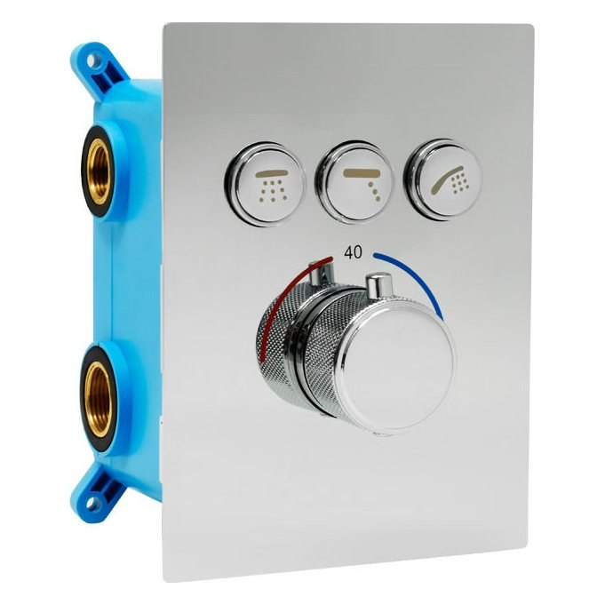

Home / Sanitary supplies / Prefab mobile toilet cabin, EPS sandwich panel

Sanitary supplies
Prefab mobile toilet cabin, EPS sandwich panel
Prefabricated, crane-liftable toilet cabin made of EPS sandwich panels for construction sites without a fixed sanitary connection.
A steel frame, metal-faced panels on both sides and a lockable door provide a stable, easy-to-clean room. A professional user in Germany expects a documented fire class of the panels (EN 13501-1), testing of the cabin per EN 16194, electrical installation per DIN VDE 0100-704 and equipment per ASR A4.1.
Technical data
| External dimensions (W × D × H) | approx.; 1,200 × 1,200 × 2,300 mm |
|---|---|
| Wall build-up | EPS sandwich panel, 50 mm, steel facings |
| Frame | Steel frame, galvanised, crane lifting eyes |
| Equipment | Toilet bowl, washbasin, ventilation, lighting, lock |
| Water/waste water | Fresh water tank and waste water connection DN 100 |
| Electrics | 230 V, RCD protection, IP 44 |
| Customs tariff number (HS) | 94069038 |
EU standards and regulations
EN 16194Mobile non-sewer-connected toilet cabins – Requirements and test methodsEN 14509EN 13501-1Fire classification of construction products and building elements – Part 1DIN VDE 0100-704Low-voltage electrical installations – Construction and demolition site installationsASR A4.1Technical Rules for Workplaces – Sanitary facilities
More products in this category
Two-piece ceramic toilet with close-coupled cistern, dual flushWhite floor-standing close-coupled toilet in sanitary ceramics with cistern and seat for staff toilets and refurbishment projects.
Ceramic washbasin 60 cm, wall-hungWhite wall-hung washbasin in sanitary porcelain with tap hole and overflow for staff and sanitary rooms.
Single-lever basin mixer, chrome-plated brassBrass single-lever basin mixer with ceramic cartridge and pop-up waste set for sanitary rooms.
Soap dispenser 1,000 ml, wall-mounted, ABSLockable wall-mounted soap dispenser with inspection window for staff and sanitary rooms on construction sites.
Paper towel dispenser, wall-mounted, ABS, lockableLockable wall dispenser for folded paper towels (Z/C-fold) with inspection window for staff and sanitary rooms on construction sites and in workshops.
Toilet paper 2-ply, bulk packTwo-ply toilet paper in bulk packs for the ongoing supply of site toilets and sanitary rooms.
Wall-hung ceramic urinal, rear water inletWhite wall-hung urinal in sanitary ceramics with rear water inlet for staff toilets, sanitary containers and refurbishment projects.
Duroplast WC seat with soft-close and quick release, O-shapeUrea-resin duroplast WC seat with soft-close and quick release, round O-shape, about 456 mm long.
Chrome basin installation set: bottle trap and 2 angle valves (brass)Chrome-plated brass bottle trap 1 1/4 inch plus two 1/2 inch angle valves for the complete basin connection.
Touchless sensor soap dispenser, foam or liquid, 1,000 ml, wall-mountedWall-mounted ABS sensor dispenser with 1,000 ml capacity for liquid soap, foam or spray, battery or adapter operation.
WC cistern repair kit: dual-flush drain valve and inlet (fill) valveComplete flush mechanism for close-coupled cisterns: dual push button with drain valve and side-entry inlet valve.
Concealed in-wall cistern, dual flush, HDPE

Stainless steel 304 grab bar, 25 mm, wall-mounted
Stainless steel pedal bin 30 l
Portable camping toilet 20 l, cassette system
Touchless sensor basin tap, brass
Automatic high-speed wall-mounted hand dryer

Thermostatic shower mixer, chrome brass

Folding shower seat, stainless steel, wall-mounted